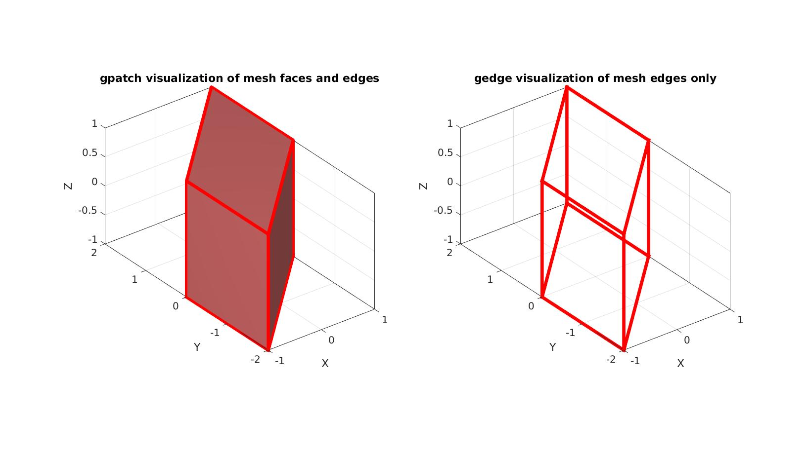
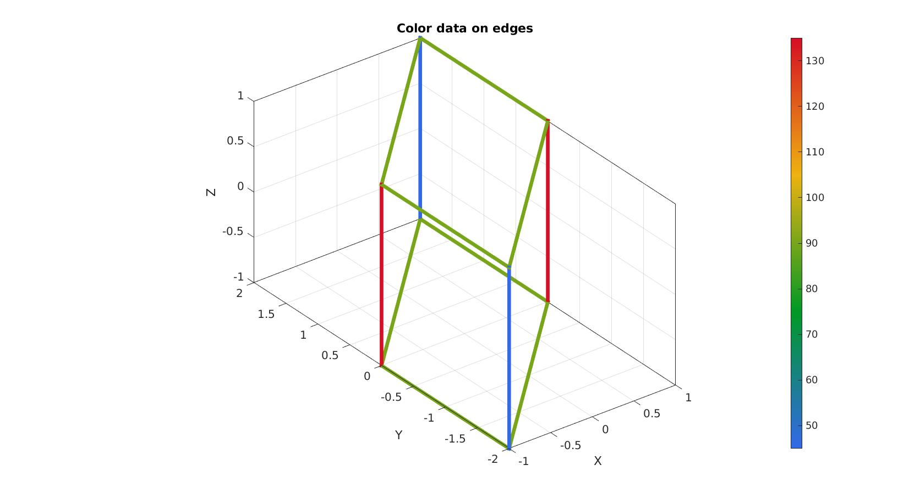
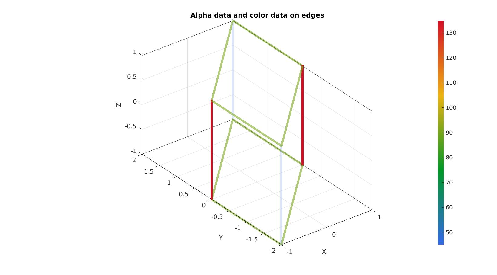
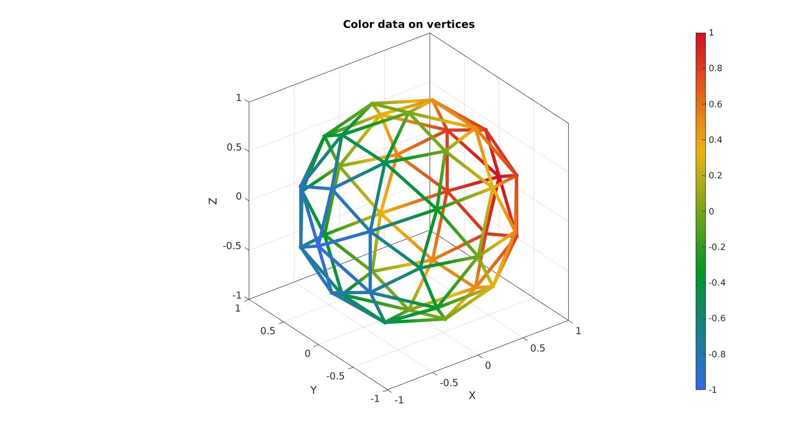
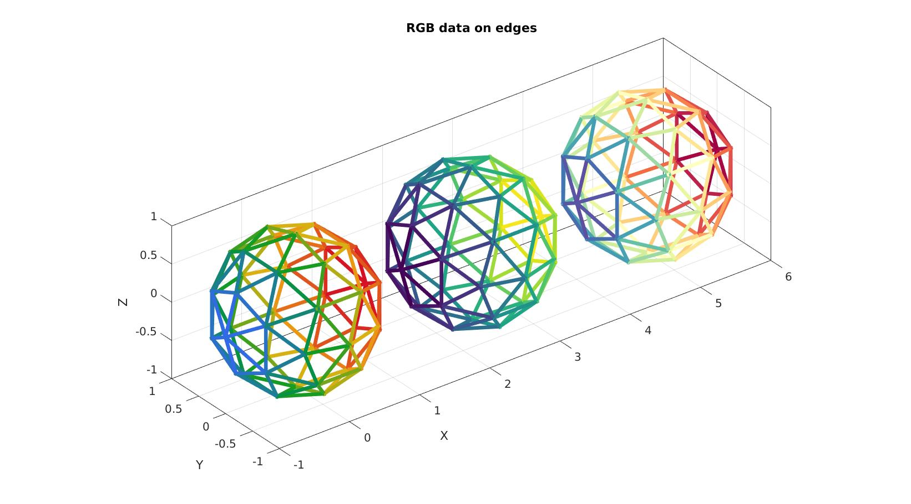
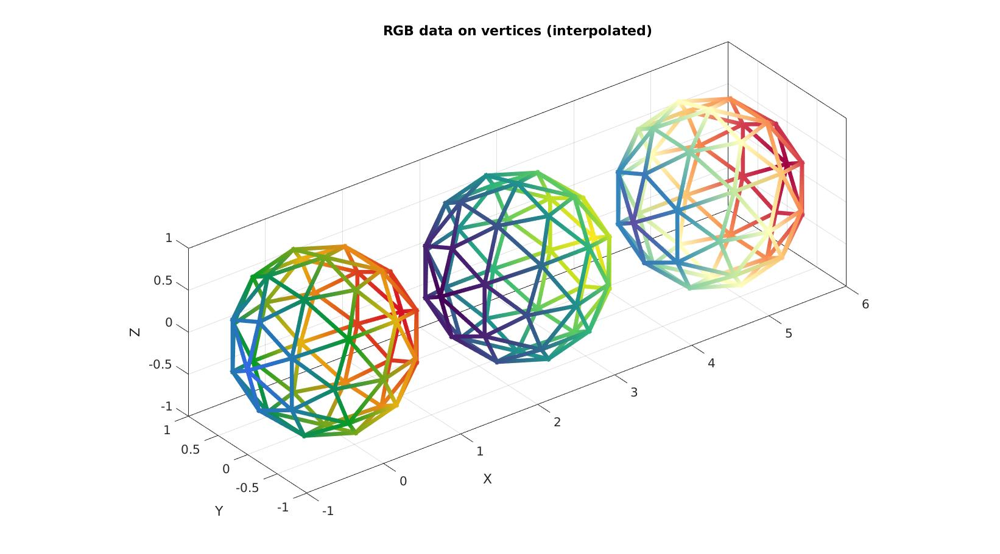

gedge
Below is a demonstration of the features of the dihedralAngles function
Contents
- Syntax
- Description
- Examples
- Example 1: Visualizing edges in a single color
- Example 2: Using colormapping on the edges
- Example 3: Specifying edge transparency as well
- Example 4: Interpolated colors from vertex (node) data
- Example 5: Specifying RGB color data on edges
- Example 6: Specifying RGB color data on vertices (nodes)
clear; close all; clc;
Syntax
[h]=gedge(E,V,AE,5,AE);
Description
The gedge function aids in the visualization of edges e.g. of meshes. Edge coloring and transparency can be prescribed.
SEe also gpatch.
Examples
Plot settings
fontSize=20; edgeThickness=5; cmap=gjet(250);
Create example data, mesh data for a hex mesh
%Create mesh for a cube boxDim=2*ones(1,3); boxEl=1*ones(1,3); [meshStruct]=hexMeshBox(boxDim,boxEl); Eh=meshStruct.E; V=meshStruct.V; F=meshStruct.F; %Distorting the shape (shear) d=eye(3,3); %Identity d(1,2)=1; %Add shear V=V*d; %Deform %Get mesh edges E=patchEdges(F,V);
Example 1: Visualizing edges in a single color
cFigure; subplot(1,2,1); hold on; title('gpatch visualization of mesh faces and edges'); gpatch(F,V,'rw','r',1,edgeThickness); axisGeom; camlight headlight; subplot(1,2,2); hold on; title('gedge visualization of mesh edges only'); gedge(E,V,'r',edgeThickness); axisGeom; camlight headlight; drawnow;
Example 2: Using colormapping on the edges
Create example color data on edges, e.g. the mesh dihedral angle
[~,E,AE]=dihedralAngles(Eh,V,'hex8');
AE=180*(AE./pi);
cFigure; hold on; title('Color data on edges') gedge(E,V,AE,edgeThickness); axisGeom; camlight headlight; colormap(cmap); colorbar; gdrawnow;
Example 3: Specifying edge transparency as well
cFigure; hold on; title('Alpha data and color data on edges') gedge(E,V,AE,edgeThickness,AE); axisGeom; camlight headlight; colormap(cmap); colorbar; alim([25 135]); gdrawnow;
Example 4: Interpolated colors from vertex (node) data
[F,V]=geoSphere(1,1); E=patchEdges(F); VE=patchCentre(E,V); CE=VE(:,1); %Example edge color data = mid-edge x-coordinate CV=V(:,1); %Example vertex color data = x-coordinate
cFigure; hold on; title('Color data on vertices') h= gedge(E,V,CV,edgeThickness); h.EdgeColor='interp'; %Turn on interpolated shading axisGeom; camlight headlight; colormap(cmap); colorbar; gdrawnow;
Example 5: Specifying RGB color data on edges
C_rgb1=cmaperise(CE,gjet(250)); C_rgb2=cmaperise(CE,viridis(250)); C_rgb3=cmaperise(CE,spectral(250)); V2=V; V2(:,1)=V2(:,1)+2.5; V3=V2; V3(:,1)=V3(:,1)+2.5;
cFigure; hold on; title('RGB data on edges') h1= gedge(E,V ,C_rgb1,edgeThickness); h2= gedge(E,V2,C_rgb2,edgeThickness); h3= gedge(E,V3,C_rgb3,edgeThickness); axisGeom; camlight headlight; gdrawnow;
Example 6: Specifying RGB color data on vertices (nodes)
C_rgb1=cmaperise(CV,gjet(250)); C_rgb2=cmaperise(CV,viridis(250)); C_rgb3=cmaperise(CV,spectral(250));
cFigure; hold on; title('RGB data on vertices (interpolated)') h1= gedge(E,V ,C_rgb1,edgeThickness); h1.EdgeColor='interp'; h2= gedge(E,V2,C_rgb2,edgeThickness); h2.EdgeColor='interp'; h3= gedge(E,V3,C_rgb3,edgeThickness); h3.EdgeColor='interp'; axisGeom; camlight headlight; gdrawnow;

GIBBON www.gibboncode.org
Kevin Mattheus Moerman, gibbon.toolbox@gmail.com
GIBBON footer text
License: https://github.com/gibbonCode/GIBBON/blob/master/LICENSE
GIBBON: The Geometry and Image-based Bioengineering add-On. A toolbox for image segmentation, image-based modeling, meshing, and finite element analysis.
Copyright (C) 2006-2022 Kevin Mattheus Moerman and the GIBBON contributors
This program is free software: you can redistribute it and/or modify it under the terms of the GNU General Public License as published by the Free Software Foundation, either version 3 of the License, or (at your option) any later version.
This program is distributed in the hope that it will be useful, but WITHOUT ANY WARRANTY; without even the implied warranty of MERCHANTABILITY or FITNESS FOR A PARTICULAR PURPOSE. See the GNU General Public License for more details.
You should have received a copy of the GNU General Public License along with this program. If not, see http://www.gnu.org/licenses/.